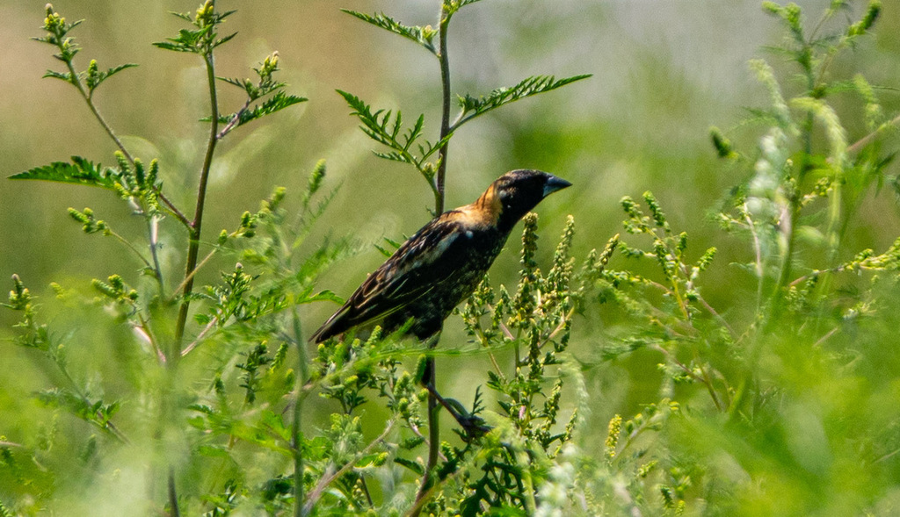

- The breeding male is the only North American bird with black underparts and a white back — an upside-down tuxedo that makes him unmistakable in spring. By fall he molts into the same streaky buff-and-brown plumage as the female, and migrating flocks passing through Florida are easily mistaken for sparrows.
- The Bobolink makes one of the longest round-trip migrations of any songbird in the Western Hemisphere — roughly 12,500 miles each year between northern grasslands and the pampas of southern South America. A bird that lives nine or ten years may travel the equivalent of traveling around the earth four or five times.
- Florida is not a destination for Bobolinks — it is a crossroads. The vast majority of the eastern population funnels through the state twice a year, southbound in late summer and northbound in spring, making it one of the best places in North America to see this species without ever leaving the peninsula.
- To navigate a journey that spans two continents, Bobolinks carry internal compasses: iron oxide deposits in nasal bristles let them sense the earth's magnetic field. They also steer by the night sky, using a learned star compass calibrated against the magnetic compass — a system that must adapt as the entire sky changes after the bird crosses the equator into the southern hemisphere.
A compact, flat-headed songbird, larger than a sparrow but smaller than a Red-winged Blackbird. Length 6.3 to 7.1 in (16 to 18 cm); wingspan 10.6 to 11.8 in (27 to 30 cm). The bill is short and conical, the tail short with distinctly pointed feathers — a useful detail at close range.
Unmistakable: entirely black below, with a bold white lower back and rump, white shoulder patches, and a rich cream or buff nape. No other North American bird is dark below and pale above. The black bill is also distinctive in this plumage. This striking alternate plumage is grown through a complete molt on the South American wintering grounds — one of two full molts the species completes every year.
Warm buffy-brown overall, with dark brown streaks on the back and flanks. The head shows a dark crown with a pale central stripe, a dark eye-line, and a clean, unstreaked nape — that clear nape is the best mark separating this plumage from streaky sparrows. The bill is pinkish. This basic plumage is the result of the post-breeding complete molt, after which the bird's feathers are fully renewed for the long migration south.
Similar to female but slightly paler and with less defined streaking. The unstreaked nape is still present and useful for identification.
Breeding males flash the white back and rump prominently. In nonbreeding plumage, flocks look sparrow-like in flight but tend to move in loose, rolling groups with a buoyant, slightly undulating style. Listen for the soft pink call note, which flocks give almost continuously.
The male's song is one of the most distinctive in North American ornithology — a long, cascading, electronic-sounding series of 25 to 50 notes that tumble across a wide pitch range, mixing buzzy low tones with bright, sharp highs. It is frequently delivered in flight and carries well across open ground. Both sexes give a soft, metallic pink or bink call year-round; this note — often the first sound you notice from a passing flock — is especially useful for picking out migrants in mixed flocks or overhead. Only males sing the full display song.
Spring (northbound, late April to mid-May): the breeding male's reversed tuxedo is unlike anything else in Florida — jet black below, brilliant white above, with a creamy-yellow patch glowing on the back of the neck. Fall (southbound, August through October): look for compact, flat-headed birds in buffy streaked brown moving in loose flocks; the key mark is a clean, unstreaked nape and a pinkish bill that separates them from the many sparrows they superficially resemble. By ear, year-round: a soft, metallic pink or bink call note, given almost continuously by passing flocks, is usually the first clue a group is overhead — hear it, then look up.
Diet shifts with the season. During breeding, the majority of food is insects — beetles, grasshoppers, caterpillars, wasps, ants, and spiders — which are also fed almost exclusively to nestlings. Seeds of grasses, weeds, and wild grains make up the rest of the summer diet. During migration and winter the balance reverses: seeds and grains dominate, with rice, oats, corn, and weed seeds the main items and insects taken only occasionally. Migrants sometimes feed after dark on bright nights to build fat reserves before long over-water flights.
Scan the open grassy areas and the margins of the park's lakes, particularly in the early morning after a night of migration. Flocks often perch low in tall grasses or on weed stalks while feeding, and can be surprisingly inconspicuous until flushed. Listen first: the soft pink call note often betrays a flock before you can see the birds. In spring, the possibility of a male in breeding plumage — jet black below, white above — makes the search especially worthwhile.
A migrant visitor to Manatee County, not a resident. Spring passage typically runs from late April through mid-May; fall passage runs from mid-August through October, with peak numbers in September. Florida is one of the primary corridors for the eastern population on both legs of the journey. Bobolinks migrate nocturnally, so the birds that appear in fields and wetlands by day are resting and refueling after a night's flight. Morning is by far the best time to look.
Observe freely. Migrating flocks can be approached with care, though they flush readily if pressed. Keep to paths and avoid pushing into grassy areas where birds may be resting and feeding — disturbing migrants that are actively refueling has real costs to their journey.


- © Rob Carr (CC-BY-NC), via iNaturalist